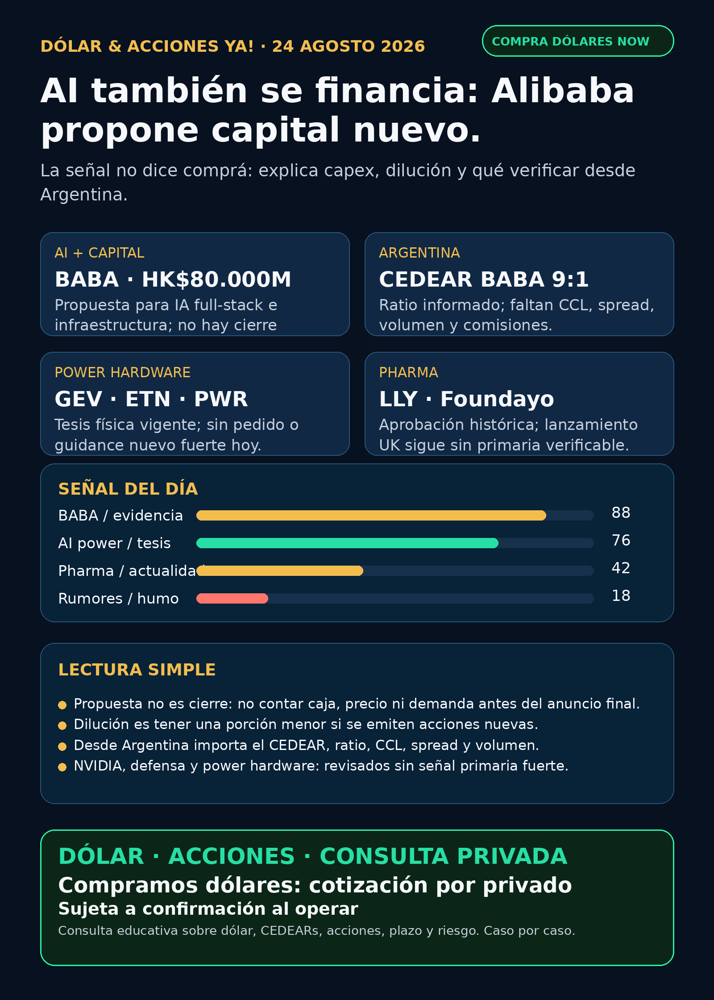

Corte editorial: lunes 24/08/2026, 08:45 (Argentina). Reporte con fuentes verificables y datos públicos. No es asesoramiento financiero ni recomendación de compra/venta. Cartera Ricardo: liquidada, devuelta y terminada; no hay posiciones activas ni P&L que reportar.
Lectura simple del día
La señal verificable de hoy es Alibaba (BABA) proponiendo una colocación de acciones por HK$80.000 millones para financiar capacidades de IA full-stack e infraestructura. La palabra clave es *proponiendo*: el documento oficial no confirma cierre, monto efectivamente recibido, precio final, descuento ni demanda.
En criollo: construir AI y cloud demanda chips, data centers, energía y caja. Levantar capital puede permitir sostener esa carrera tecnológica; para quienes ya tienen acciones, también puede significar dilución, es decir, una porción menor de la compañía por acción si la operación se concreta. Empresa con ambición AI no equivale automáticamente a inversión conveniente.
La segunda lectura útil es de método: no elevamos rumores de NVIDIA sobre precios o Perplexity, ni un supuesto lanzamiento británico de Foundayo de Lilly, porque en este corte no tuvieron una primaria o secundaria final auditable. Mejor una señal sólida que cinco titulares con humo.
Argentina: dólar e instrumento antes que ticker
BABA y que Banco Comafi informa ratio 9:1. Antes de pensar una operación faltan precio vivo, volumen, spread, CCL implícito, comisiones y horizonte.Ranking educativo por calidad de señal — no es ranking de compra
1) Alibaba / `BABA` — financiamiento AI propuesto, con riesgo explícito de dilución
BABA cotiza; está en radar, no implica compra. Hacen falta valuación, precio, horizonte, liquidez y tolerancia al riesgo.BABA verificado como instrumento existente, ratio 9:1 informado por Comafi; instrumento a revisar, no ejecución automática. Falta chequear rueda, spread, CCL, comisiones y liquidez local.2) AI infra física — tesis estructural vigente, sin señal diaria nueva fuerte
GEV, ETN, PWR, HUBB, VRT, MOD, Hitachi/Hitachi Energy, Siemens Energy (ENR.DE, no Siemens AG), HD Hyundai Electric (267260.KS) e Hyosung (298040.KS). No apareció pedido, backlog, guidance, contrato o resultado primario nuevo que cambie materialmente la tesis en esta ventana.3) Pharma / GLP-1 — separar aprobación histórica de catalizador fresco
FOUNDAYO de Lilly, NDA 220934, con aprobación original el 01/04/2026 y un suplemento de label aprobado el 04/08/2026.LLY y el carril GLP-1 siguen en radar / seguimiento. No hay aprobación FDA/EMA, Phase III, M&A, guidance o patente primaria fresca adicional para elevar hoy.Watchlist base — seguimiento rápido
RKLB, NVDA, PLTR, TSM, MU, GOOGL/GOOG, AAPL, HOOD, TSLA, ASML, AVGO, CBRS y SNDK.NVDA ni fuente final verificable, ambos puntos quedan NO VERIFICADO / AUDITORÍA. No son titular ni tesis cerrada.GLD, GOLD y B son instrumentos/entidades distintos. Sin identificar el activo exacto no corresponde publicar precio o rendimiento.RVI: cartera verificable al 30/06, pero sin NAV/premium contemporáneo, volumen, fees, prospecto/fact sheet y acceso Argentina. Vigilar; no accionable por ahora.Energía: global y Argentina
NEE, D, VST, CEG, nuclear y uranio fueron revisados sin contrato, guidance, decisión regulatoria, resultado o filing primario nuevo que convierta demanda AI en ingreso material.YPF, PAM/PAMP, CEPU, TGS y VIST fueron revisadas sin primaria nueva fuerte. Son radar educativo; antes de ejecución local hacen falta cotización, volumen, spread, instrumento/ADR-CEDEAR y CCL del día.Radar amplio — recibo de cobertura
AVAV, GE, RTX, LMT, NOC, GD, HWM, KTOS, BA, ITA y XAR revisados. Los 8-K recientes de NOC y BA refieren a asuntos de personas/gobierno, no contratos, backlog, margen ni guidance. Revisado sin señal fuerte de negocio.RKLB, SpaceX/SPCX, Starcloud y wrappers aparecieron como discovery, pero sin términos verificables de financiación, comunicado de emisor o filing utilizable. Auditoría / no accionable directo por ahora.DXYZ, ARKVX, AGIX, XOVR, VCX, FAPMI/Forge y RVII no presentaron paquete contemporáneo verificable de listing efectivo, holdings, NAV, premium/descuento, fees, volumen y acceso. NO ACCIONABLE / NO VERIFICADO.Red flags para ignorar
1. “Propuesta” no es “cerrada”: no contar la colocación BABA como caja recibida ni como éxito de AI antes del anuncio final.
2. Rumor de NVIDIA no es filing: precio de chips o Perplexity requieren evidencia primaria o secundaria auditable.
3. Aprobación no es ventas: FDA/EMA, cobertura, lanzamiento y adopción son etapas distintas.
4. Private equity no es exposición directa: un wrapper con una privada adentro puede tener NAV fechado, premium, fees y liquidez que cambian por completo el resultado.
5. Ticker global no es ejecución argentina: antes de usar CEDEAR, mirar ratio, CCL, spread, comisiones y volumen.
Qué mirar después
1. Alibaba/HKEX: términos finales, cierre o cancelación de la propuesta; precio, cantidad, descuento y uso efectivo de fondos.
2. BABA CEDEAR: volumen local, spread, CCL implícito y comisiones antes de cualquier análisis humano.
3. NVDA: comunicado o fuente abierta verificable sobre pricing/Perplexity antes de elevar el claim.
4. Power hardware: pedidos, backlog, lead times, permisos e interconexión en GEV, Hitachi, Siemens Energy, HD Hyundai y Hyosung.
5. Pharma: confirmación primaria de Lilly UK/MHRA si el lanzamiento de Foundayo se vuelve relevante; no reciclar aprobaciones viejas.
Servicio privado
Dólar · Acciones · Consulta privada. Si querés ordenar dólar, CEDEARs, acciones, plazo y riesgo, escribime por privado y lo vemos caso por caso. Cotización sujeta a confirmación al momento de operar.
Disclaimer: este reporte es research educativo para decisión humana. No es asesoramiento financiero personalizado ni recomendación de compra o venta.